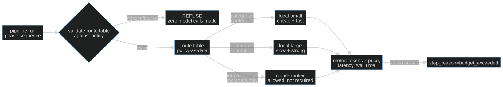

S11-budgets-routing — Budgets, routes, and the privacy boundary
Carried in: cafe/taxonomy.py — S10's failure classes, and the debrief number S10 banked. Your shift can now name what goes wrong; tonight it learns what a call is allowed to cost and where it is allowed to run.
Today you ship: cafe/routing.py — the budget gate, the route table, and the boundary that refuses a leak.
What this teaches: cost, latency and data flow as harness-enforced invariants — a budget that refuses a call whose projected cost would cross the line before it is dispatched, a route table kept as reviewable policy-as-data, and a privacy boundary that raises on a misconfiguration instead of silently falling back.
Time: 20–40 min active reading, 45–75 min notebook work, 5–10 min self-check. These are planning estimates, not measured learner timings. Prerequisites: S01 (the loop this gate wraps); S02 (relative comparisons inside one session — the routing argument is a delta table).
Hands-on: notebooks/s11_budgets_routing_toy.py — runs against your model.
Video: Gemini Notebook overview — generated with Google Gemini Notebook (formerly NotebookLM); recorded against an earlier cut of this path, so it still uses the previous toy domain. Preview or review, never a substitute for the notebook.
The hook
Last Thursday the till showed €0.42 of model spend on a task the shift prices at
€0.05. Nothing errored. The loop kept refining, every individual call looked
reasonable, and the first moment anyone could see the total was the moment the invoice
existed. Money spent on a call you did not need is not refundable by adding an if
afterwards.
The same evening, a "performance tweak" pointed the phase that reads the customer's handwritten note — card number, phone number, the lot — at a cloud route. It worked beautifully. It was also a leak, and it happened at the routing decision, not inside the model.
The promise
By the end of this session you will be able to write a route table as data, prove that a
call whose projected cost would cross the budget is refused before it is dispatched,
and prove that a content phase pointed at a cloud route raises before a single request
leaves the machine. You will also bank real token and latency numbers — read from the
endpoint's own usage and the client's own clock, not from a formula.
The theory in depth
A budget is a runtime invariant, not a finance report
The invoice is a lagging indicator. By the time it exists, the calls have been paid for. So
the budget lives inside the loop and reads ahead: the route prices its own call
before the call happens, and a call that would cross the line is refused.
stop_reason="budget_exceeded" is a first-class outcome — a run that costs more than the
task is worth has failed, even mid-progress.
The estimate is a lie you need: a gate cannot know the usage before the endpoint speaks.
The ledger is the truth, and it is written from response["usage"] after the call.
Two numbers, two jobs: the estimate refuses, the usage records.
Routing is policy-as-data
A route table is a dict: café phase → route name. Each route carries a location, a model label, and a price per 1k tokens. It is diffable, reviewable, and validatable without touching the engine — and the route you choose cites a measured number rather than a preference. Different phases of one shift differ wildly in difficulty; sending the note (and its card number) to the same place as a category summary is not a routing policy, it is an accident.

The privacy boundary refuses; it does not warn
Every phase carries a classification; every route carries a location. A content
phase — the note with the card and phone numbers, the prose about this customer's order —
must resolve to a local route. validate_policy runs before any model call and raises.
It does not warn, and it does not fall back to a safe route: a silent fallback is the same
leak with better logging.
A warning is a log line nobody reads during the incident. A refusal makes the
misconfiguration un-runnable. The one phase allowed off-local is till_summary, which
carries metadata only — category totals, no descriptions — because classification decides
what may leave, not the vendor's reputation.
What "measured" means tonight
response["usage"] gives the tokens the endpoint actually charged for.
client.last_latency_ms gives the wall time around the request, set by the client around
the call, not by a formula in this notebook. A refused call is never sent, so
client.calls and client.last_latency_ms keep the values of the previous dispatched
call — which is exactly how the notebook proves the refusal happened before the wire.
Build (in the notebook, predict first)
Open notebooks/s11_budgets_routing_toy.py.
Configure your endpoint first:
export CAFE_BASE_URL=http://127.0.0.1:11434/v1
export CAFE_API_KEY=ollama
export CAFE_MODEL=qwen2.5:14b-instruct
uv run python -m cafe.doctor
uv run marimo edit notebooks/s11_budgets_routing_toy.py
- The seam, unchanged.
get_client()is the only way this notebook reaches a model. Tonight the numbers that matter come from the client:usageon the response andclient.last_latency_msaround the request. - Predict first: the gate predicate. The harness knows
spent_usdand the route'sprojected_usd. Write the predicate that refuses the call, then flip the reveal switch. Edge case that matters: no budget means no limit. The harness does the refusing; your predicate only returns a bool. - One real metered call. A
draft_replyrouted throughlocal-large. The projected cost prints next to the real one; on a short note they are close, on a long one they drift. That gap is why the gate uses an estimate and the ledger uses usage. - Predict first: a table that validates. Fill
attempt_route_table()sovalidate_policyaccepts it:read_noteanddraft_replyare content phases,till_summaryis metadata, andlocal-small,local-large,cloud-frontierare the routes. Then flip the reveal switch for a reference. The boundary answers "is it allowed"; it never answers "is it wise" — that is a measurement you would run next. - Watch the invariants. Three notebook cells are protocol invariants: an over-budget
call is refused and
client.callsdoes not move; a content phase on a cloud route raises while the metadata phase on the same route is permitted; and every metered token count equals the endpoint'susage, with latency read fromclient.last_latency_ms.
Checkpoint — the numbers you bank
Two invariants you can now demonstrate on demand:
- a call whose projected cost crosses the budget is refused before dispatch, so
client.callsdoes not move and its cost never lands; - a content phase pointed at a cloud route raises, while the same route on a metadata phase is permitted.
And two measured numbers from your own endpoint: total tokens and median latency across the checkpoint calls, plus what they cost at the route's price. On a small local model these are small and a little noisy; they are still live measurements. S12's judge costs money too, and without these numbers you cannot say whether it is worth running.
State of the art (as of August 2026)
| Development | Status | Take |
|---|---|---|
| LiteLLM proxy — provider budget routing | recognize | A gateway can enforce budgets across providers. Read the semantics: many gateways stop subsequent calls rather than refusing the crossing one — verify before you assume it prevents overshoot. |
| RouteLLM (LMSYS) | recognize | Learned routing between a strong and a weak model. Your table is the hand-written version; their result is the evidence that routing beats "always strong." |
| RouteLLM — the paper | recognize | Same idea with the numbers: cost reduction at a held quality bar. Read it as the defensible version of "the cheapest route that holds the number." |
| OpenRouter — auto router | recognize | Model selection as a service. Note that it picks on capability, not on your data classification — the privacy boundary stays yours to enforce. |
| Apple — Private Cloud Compute | adopt | The industrial version of "content stays local unless the boundary says otherwise." Steal the stance: the boundary is architectural, not a flag you remember to set. |
| OWASP LLM06: Excessive Agency | recognize | An unbounded, un-metered agent is the excessive-agency risk with a bill attached. Your budget and route table are the governance layer it asks for. |
Annotated readings
- LiteLLM, provider budget routing. Extract where the budget is checked relative to the request: pre-dispatch or post-usage. The difference is the whole of this session's first invariant.
- LMSYS, RouteLLM / paper. Extract the framing of the quality bar: a route is defensible only against a measured number, never a preference.
- Apple, Private Cloud Compute. Extract the stance, not the infrastructure: the boundary is enforced by design and refuses, which is what
validate_policyis a toy of.
Misconceptions and failure modes
- "The budget is a report." A report is written after the money is gone. The gate must read ahead: a crossing call refused before dispatch is cheap; one refused after is an FYI.
- "The estimate is the cost." The estimate is a lie you need to make the pre-dispatch decision; the endpoint's
usageis the truth. Confuse them and your ledger drifts from your invoice. - "Warn and fall back to a safe route." A silent fallback is the same leak with better logging. The boundary raises, and the misconfiguration becomes un-runnable.
- "Route by which model sounds better." Route by classification and by a measured number. The vendor's reputation does not entitle a content phase to leave the machine.
- "A refused call still costs latency." It does not: a refused call never reaches
client.chat, soclient.callsandlast_latency_msdo not move. That is how you prove the refusal happened before the wire.
Self-check
Why does the gate use an estimate before dispatch if the real cost is only known after?
Because a post-call meter is a soft stop: by the time it sees the crossing, that call was already paid for. A pre-dispatch estimate refuses the call that would cross, so the cost never lands. The estimate is not the ledger; it only has to be good enough to refuse.A content phase is routed to a route whose location is cloud. What does the harness do?
`validate_policy` raises before any model call. It does not warn and does not fall back to a safe route — a silent fallback is the same leak with better logging. The misconfiguration has to be un-runnable.Why is `till_summary` allowed off-local when `read_note` is not?
Because classification is a property of the data, not the vendor. `read_note` sees the customer's handwritten card and phone numbers — content. `till_summary` carries metadata only: category totals, no descriptions. The boundary permits the second and refuses the first on the same route.The metadata phase and the content phase use the same cloud route. Does the boundary care about the route or the data?
The data. The same route is permitted for metadata and refused for content; `validate_policy` checks each phase's classification against its route's location. Routing decisions are about what the data is, not which model is fashionable.What this unlocks
You now have a harness that can refuse work before paying for it, and a policy table you can review in a diff. What you still do not have is any idea whether the thing producing the answers is any good. S12 — Judge calibration turns a model into an instrument: it seeds defects you already know the answer to, and makes you measure detection and false positives before you trust a single verdict.